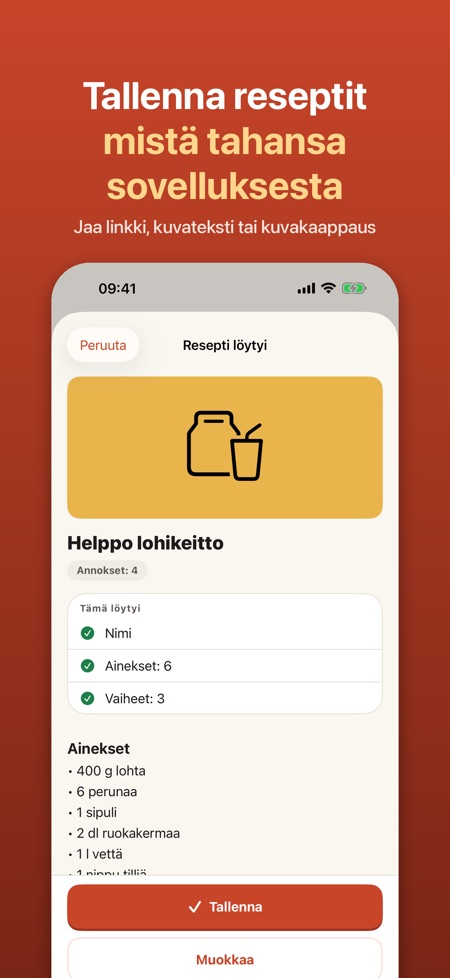
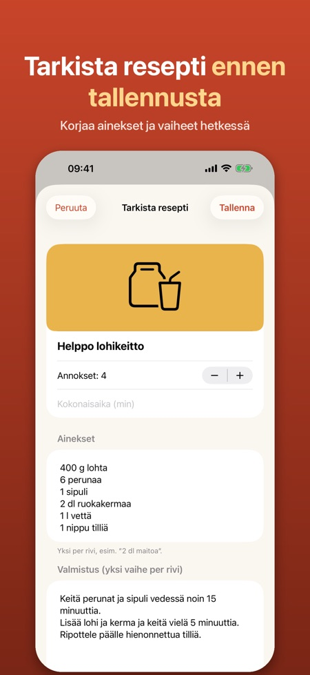
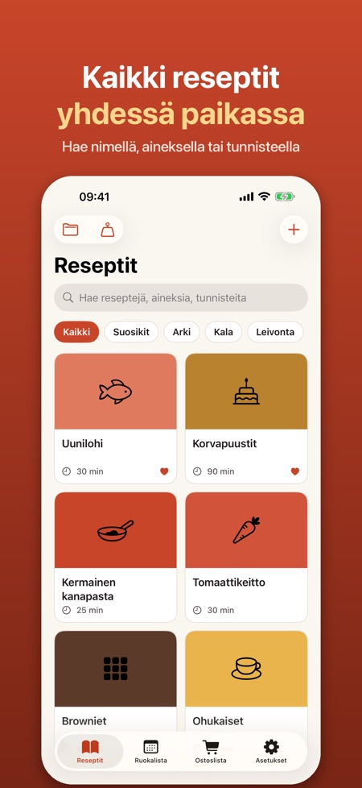

Ruokalista ja ostoslista. Jaa resepti sovelluksesta tai verkkosivulta, niin saat siistin reseptikortin aineksineen ja vaiheineen. Skaalaa annokset, kokkaa vaihe kerrallaan, suunnittele viikko.



Näitkö reseptin sovelluksessa tai verkkosivulla? Jaa se sovellukseen, niin siitä tulee siisti reseptikortti, jonka mukaan voit kokata.
NÄIN TALLENNAT
• Napauta Jaa Safarissa, Instagramissa, TikTokissa tai muussa sovelluksessa ja valitse Reseptit
• Reseptisivustojen linkit luetaan automaattisesti: nimi, ainekset, vaiheet, aika, annokset ja kuva
• Somesta käytetään jakamaasi tai liittämääsi tekstiä tai kuvakaappausta (Pro)
• Näet reseptin aina ennen tallennusta ja voit korjata kaiken
KOKKAA
• Kokkaustila: iso teksti, yksi vaihe kerrallaan, ja näyttö pysyy päällä
• Ajastimet löytyvät tekstistä ("paista 20 minuuttia") ja käynnistyvät yhdellä napautuksella
• Muuta annosmäärää
• Muunna cupit ja unssit desilitroiksi ja grammoiksi sekä tbsp/tsp rkl:ksi ja tl:ksi
SUUNNITTELE JA OSTA
• Ostoslista: valitse ainekset, ja samat tuotteet yhdistetään (2 dl + 1 dl maitoa = 3 dl)
• Jaa lista tai vie se Muistutuksiin
• Viikon ruokalista: vedä reseptejä päiville ja lisää koko viikko ostoslistaan (Pro)
OMA KOKOELMA
• Hae nimistä, aineksista ja tunnisteista
• Suosikit, tunnisteet ja kokoelmat (kokoelmat Prolla)
• Lähdelinkki tallentuu, joten näet aina, mistä resepti on peräisin
YMMÄRTÄÄ POHJOISMAISIA RESEPTEJÄ
Sovellus lukee reseptejä suomeksi, ruotsiksi, norjaksi, tanskaksi ja englanniksi ja tuntee mittayksiköt, kuten dl, rkl, tl, msk, tsk, krm, ss, ts ja spsk.
PRO
Ilman Prota voit tallentaa enintään 15 reseptiä ja käyttää kokkaustilaa ja ostoslistaa. Pro tuo rajattomasti reseptejä, kuvakaappausten luvun, älykkään tuonnin (Apple Intelligence -laitteilla), ruokalistan ja kokoelmat. Valitse vuositilaus tai kertaosto. Tilaus uusiutuu automaattisesti, ellei sitä peruta viimeistään 24 tuntia ennen jakson päättymistä, ja sen voi perua kohdassa Asetukset > nimesi > Tilaukset.
YKSITYISYYS
Ei tiliä eikä mainoksia. Reseptisi pysyvät puhelimessasi. Sovellus ei koskaan kirjaudu someen ja hakee vain sen, minkä itse jaat.
Sovellus on itsenäinen eikä liity Instagramiin, TikTokiin, Metaan tai muihin mainittuihin palveluihin. Tavaramerkit kuuluvat omistajilleen.